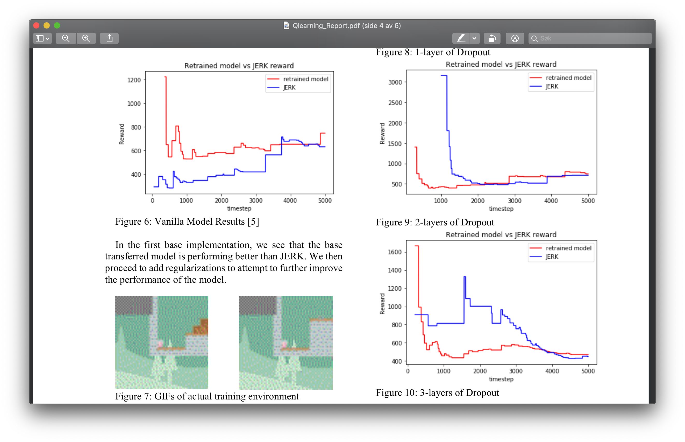
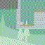
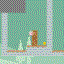
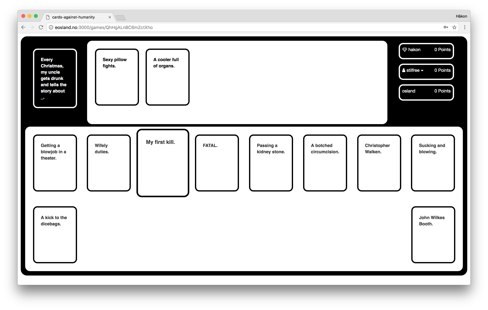

-
Generalizing Transfer Learning in Reinforcement Learning with Regularizations in CoinRun
 Abstract
In this final report, we present a new way of looking at transfer learning in Reinforcement Learning (RL) through aggressively regularizing the model by adding noise and dropout. We note that there is currently a lack of literature on the topic, and especially on reducing overfitting of RL algorithms. We hope to provide new ground for research on using a combination of regularization strategies such as Gaussian Noise Layers and Dropout layers traditionally used in deep neural networks and apply them on the context of RL using the Coinrun environment created by Open AI. At the end of the project, we are able to achieve much better performance than the baseline JERK algorithm using just Gaussian Noise regularization or Dropout, while combined strategies proved less effective. Based on what we have found, we hope to inspire new ways of applying more complex noise and dropout methods in the future.
-
Vinmonopolet 2.0

Vinmonopolet 2.0 lets you find out what kind of drinks from Vinmonopolet gets you the most alcohol per KR
-
Cards Against Humanity
In the cards against humanity webapp you can play the popular card game cards against humanity with your friends online